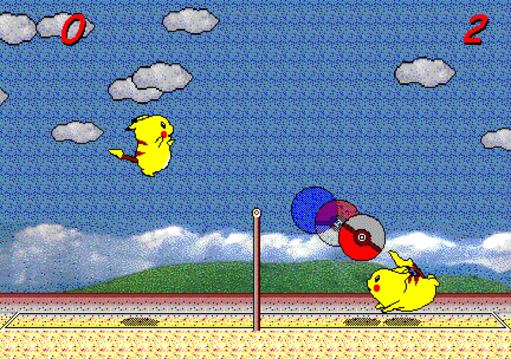

Chinese (中文) | English | ✓ Korean (한국어)
피카츄 배구 2대2 온라인 버전입니다.
2대2 오프라인 버전도 있습니다.
리플레이 재생기를 사용하여 리플레이 파일을 재생할 수 있습니다.
기존 P2P 온라인 버전도 있습니다.
슈퍼 AI 버전(만든 사람: DuckLL)도 있습니다.
스스로 배운 피카츄 배구 AI(만든 사람: 김성수)도 있습니다.
원조 피카츄 배구 (対戦ぴかちゅ～ ﾋﾞｰﾁﾊﾞﾚｰ編) 게임은 다음 분들이 만들었습니다.
1997 (C) SACHI SOFT / SAWAYAKAN Programmers
1997 (C) Satoshi Takenouchi
원조 게임의 웹 버전과 P2P 온라인 버전을 만든 사람:
이규태
2대2 버전으로 수정한 사람:
박세진, GPT-6.1 Sol
소스 코드를 GitHub에서 볼 수 있습니다.
공개한 날: 2026-??-??

원조 1대1 P2P 온라인 게임 화면입니다.
브라우저 4개에서 1명씩, 또는 브라우저 2개에서 팀당 2명씩 온라인 2대2 경기를 즐기세요.
리플레이: 리플레이 저장 버튼으로 현재 방의 기록을 다운로드하고 리플레이 재생기로 재생할 수 있습니다.
설정: 적용하기 원하는 설정에 체크 표시하면 됩니다.
방장 — 방을 만들고 초대 링크 또는 방 ID를 공유하세요.
참가자 — 방을 찾아 참가한 뒤 빈 자리를 선택하세요.
게임 자료를 불러오는 중…
입장 시 자리가 지정되지 않습니다. 빈 자리 또는 팀을 선택하고, 취소하면 자리를 비웁니다. 참가자 모두가 자리를 골라야 시작할 수 있습니다.
1명: 방향키 / Enter 또는 R/D/F/G/V/Z. 2명: 첫 번째 R/D/F/G/V/Z, 두 번째 방향키 / Enter. Space로 채팅합니다.